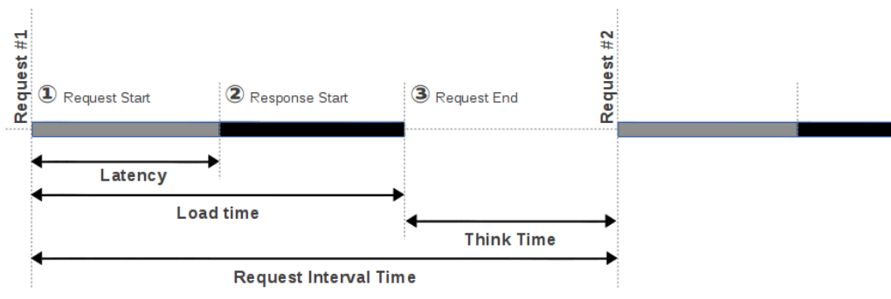

[헤딩일기]Load Test
Scale Up
Scale Out
DB를 포함하는 서비스라면 함부로 Scale Out을 하면 안돼요.
ELB
AutoScaling
AutoScaling이 뭔가요?
1.AWS의 꽃
2.지가 알아서 경우에 따라 컴퓨터를 자동으로 생성/삭제 하는 것
준비물
AMIs
- ELB에서 이미지를 인스턴스화 해서 연결했듯이 여기도 이미지가 필요해요.
Launch Configuration
Launchmean in AWS : AMIs를 인스턴스로 만드는 것이미지를 인스턴스로 만드는 설정
- 이 설정을 기반으로 컴퓨터를 실제로 만들어 줍니다.
Auto Scaling Groups
- CPU 점유율, 인스턴스 갯수(
min,max), 알람 유/무 등 실행 조건을 설정해요. 센서티브한 설정
- CPU 점유율, 인스턴스 갯수(
AWS S3
S3가 뭔가요?
파일서버를 서비스화 시킨 것
AWS RDS
Comming Soon
TEST TOOL
Apache Benchmark
Comming Soon
Apache JMeter
1. JMeter 란?
Apache JMeter는 Client-Server 구조로 된 소프트웨어의 성능 테스트를 위해서 만들어진 100% 순수 자바 프로그램입니다.
JMeter는 단위/성능/스트레스 테스트 등 많은 곳에서 활용할 수 있어요.
2. 성능 테스트 란?
실제 사용 환경과 비슷한 환경에서 테스트를 진행해서 시스템의 성능을 확인하는걸 말해요.
그 종류는 아래와 같습니다.
Load Test
시스템의 성능을 벤치 마크하기 위한 테스트예요
Load(부하)를 순차적으로 증가시키면서 응답시간이 급격히 증가하거나 처리량이 더이상 증가하지 않거나 시스템의CPU와Memory등이 기준값 이상으로 증가하는 등 비정상 상태가 발생하는 임계점을 찾아내고 이를 바탕으로 성능 이슈에 대한 튜닝과 테스트를 반복합니다.Stress Test
시스템의 최고 성능 한계를 측정하기 위한 테스트예요
Threshold(임계값)이상의 요청이나 비정상적인 요청을 보내 비정상적인 상황의 처리 상태를 확인합니다.
Spike Test
- 갑자기 사용자가 몰렸을 때 요청이 정상적으로 처리되는지
- Workload(업무부하)가 줄어들 때 정상적으로 반응하는지
확인하기 위한 테스트예요
- Stability Test / Soak Test
긴 시간 동안 테스트를 진행해서 메모리 사용량, 성능 변화 등을 확인하는 테스트예요
3. 주요 용어 정리
- Active User: 실제 서버에
연결된 상태로 요청을 처리 중인 사용자를 말해요. - InActive User: 서버와의 Session을 가지고 있지만
직접 접속하여 요청을 주고받는 상태가 아닌사용자(화면의 내용을 읽거나 정보를 입력하고 있는)를 의미해요. - Concurrent User(Active User + InActive User): 간단하게
동시접속자 수, 성능테스트에서가상 사용자 수 - Virtual User: 가상 사용자 수, JMeter에서는 Thread 수에요.
- Ramp-Up Period: Thread(Virtual User)생성에 걸리는 시간이에요. thread= 10, ramp-up= 50이면 10개의 thread를 50초에 걸쳐 차례대로 생성해요. 다시말해 5초에 thread 1개씩 만들어내요.
- Throughput: 단위 시간당 대상 서버에서 처리되는 요청수를 말해요. 보통 TPS(Transaction Per Seconds)로 표현해요.
여기서부터 개인적으로 중요하다 생각합니다. 제대로 이해하고 슥 넘어가도록 해요.
- Response Time/Load Time: 응답시간 아니면 처리시간이라고 표현해요.
요청을 보내고 응답이 완료되어 사용자 화면에 출력될 때까지의 시간이에요.주요 평가지표에요. - Latency: 요청을 보낸 후 데이터를 받기 시작할 때까지의 시간을 말해요.
- Think Time: 하나의 요청에 응답을 수신하고 다음 요청을 보낼 때까지의 시간을 의미한다. 테스트에서 실제 사용자의 사용 패턴과 유사한 패턴을 구현하기 위해서는 이 Think Time을 적절히 적용해서 여러가지 패턴들을 테스트할 수 있어요.
- Request Interval Time: 요청을 보낸 후 다음 요청을 보낼 때까지 시간을 말해요.
- Load Time vs Latency: 둘이 뭔가 헷갈립니다. 아래 사진 보시죠 🤔

사진을 보시면 항상 Load Time ≥ Latency가 성립되는걸 알수 있습니다.
아래는 확실히 이해할 수 있는 예시 입니다.A와 B 사이트에 동일한 크기(10MB 정도)의 파일을 올려놓고 다운로드 테스트를 진행한다고 가정합니다.
A 사이트와 B 사이트의 결과를 비교해 보니 B 사이트의 Load Time이 2배 이상 컸습니다.
하지만 Latency는 거의 비슷했다면 차이가 나는 이유는 무엇일까요?
{kind=link}
바로
Load time - Latency는데이터를 전송받는 데 걸리는 시간이 됩니다.
즉, B 사이트가 A 사이트보다 데이터를 내려받는 속도가 느리다고 볼 수 있으며 B 사이트는 처리량을 늘리기 위해 웹 서버를 튜닝하기보다는 네트워크의 대역폭(Bandwidth)을 늘리는 것을 고려해야 하는게 좋습니다.
Online Tools
Google PageSpeed Insights
여기에서 우리 사이트 주소를 입력하고 analyze 버튼을 클릭하면 우리 사이트를 마구마구 분석합니다. 그리고 얼마 있다가 이런식으로 결과를 뱉습니다.
{kind=link}
올ㅋ 90점 잘나왔습니다. 생각보다
Chrome Audits + Performance tab
- 우리의 사이트를 Audits 탭에서 실행합니다.
- 나온 결과를 바탕으로 문제점을 이해합니다.
- 그 부분을 개선합니다.